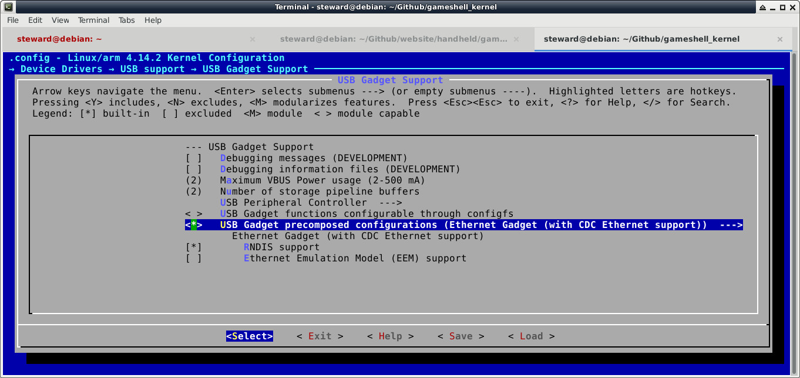

Steward
分享是一種喜悅、更是一種幸福
掌機 - GameShell - SSH(USB)
參考資訊：
https://github.com/clockworkpi/USB-Ethernet
步驟如下：
1. 編譯Kernel(CDC Support)

2. 安裝套件
$ sudo apt-get install qemu-user-static
$ sudo mount /dev/sdx xxx
$ cp /usr/bin/qemu-arm-static xxx/usr/bin/
$ sudo mount -o bind /dev xxx/dev
$ sudo mount -o bind /dev/pts xxx/dev/pts
$ sudo mount -o bind /proc xxx/proc
$ sudo mount -o bind /sys xxx/sys
$ sudo chroot xxx
root@debian:/# mount -n -o remount,suid /
root@debian:/# su - cpi
cpi@debian:~$ sudo vim /etc/resolv.conf
nameserver 8.8.8.8
cpi@debian:~$ sudo apt-get update
cpi@debian:~$ sudo apt-get install isc-dhcp-server openssh-server
cpi@debian:~$ sudo vim /etc/default/isc-dhcp-server
INTERFACES="usb0"
cpi@debian:~$ sudo vim /etc/dhcp/dhcpd.conf
subnet 192.168.10.0 netmask 255.255.255.0 {
range 192.168.10.10 192.168.10.250;
}
cpi@debian:~$ sudo vim /etc/network/interfaces
allow-hotplug usb0
auto usb0
iface usb0 inet static
address 192.168.10.1
netmask 255.255.255.0
cpi@debian:~$ sudo vim /etc/ssh/sshd_config
Port 22
PermitRootLogin yes
cpi@debian:~$ exit
root@debian:/# exit
$ sudo unmount xxx/dev/pts
$ sudo unmount xxx/dev
$ sudo unmount xxx/proc
$ sudo unmount xxx/sys
$ sudo umount xxx
3. MicroSD開機並且插入USB
$ sudo dmesg
[ 9520.486123] usb 4-1.2.4.4: new high-speed USB device number 45 using ehci-pci
[ 9520.599196] usb 4-1.2.4.4: New USB device found, idVendor=0525, idProduct=a4a2
[ 9520.599201] usb 4-1.2.4.4: New USB device strings: Mfr=1, Product=2, SerialNumber=0
[ 9520.599203] usb 4-1.2.4.4: Product: RNDIS/Ethernet Gadget
[ 9520.599206] usb 4-1.2.4.4: Manufacturer: Linux 4.14.2-clockworkpi-cpi3-g7b86a93-dirty with musb-hdrc
[ 9520.607194] cdc_ether 4-1.2.4.4:1.0 usb0: register 'cdc_ether' at usb-0000:00:1d.0-1.2.4.4, CDC Ethernet Device, f6:2f:0b:e1:71:14
[ 9520.628771] cdc_ether 4-1.2.4.4:1.0 enp0s29u1u2u4u4: renamed from usb0
$ sudo dhcpcd enp0s29u1u2u4u4
$ sudo ifconfig enp0s29u1u2u4u4
enp0s29u1u2u4u4: flags=4163<UP,BROADCAST,RUNNING,MULTICAST> mtu 1500
inet 192.168.10.10 netmask 255.255.255.0 broadcast 192.168.10.255
inet6 fe80::f42f:bff:fee1:7114 prefixlen 64 scopeid 0x20<link>
ether f6:2f:0b:e1:71:14 txqueuelen 1000 (Ethernet)
RX packets 53 bytes 6741 (6.5 KiB)
RX errors 0 dropped 0 overruns 0 frame 0
TX packets 49 bytes 6642 (6.4 KiB)
TX errors 0 dropped 0 overruns 0 carrier 0 collisions 0
$ ssh cpi@192.168.10.10
P.S. 測試後發現，目前的USB CDC驅動有問題，因此，請先不要使用這種方式做SSH登入